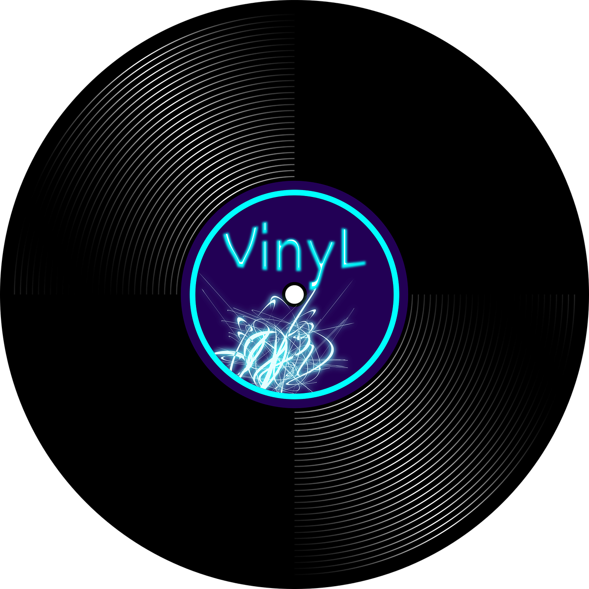

Song name
00:00
© All songs written and recorded by myself
Playlist
Late Night Riddle
02:03
Fire in a Cage
03:42
O Camp
01:12
Leaving Home
01:43
Killing Time, No Crime
02:48
Running South
02:10
Surfing Skies
01:05
Glam Clash
01:18
Jolly Journey
02:26
Keep Going
01:06
Dragonfly
01:36
Get Down
01:19
Blooming Desert
01:23
Screaming Love
02:20
Onyx and Opal
01:03
Cold Garden
01:20
When I Go
02:18
Unlimited
02:05
Dizzy
01:04
Inspelled
01:48
I Stay
01:24
HolyDays
02:20
Shop Town
00:50
Catch the Train
01:17
Funkwave
03:29
Steel Pure
02:27
VINSMAS
02:20
Descanso
01:33
Straight & Steady
02:16
Purple Black Blue
02:17
The Cave
01:50
GHS2015
01:38
Winter Wonderland
02:19
34th
03:19
The End
01:26